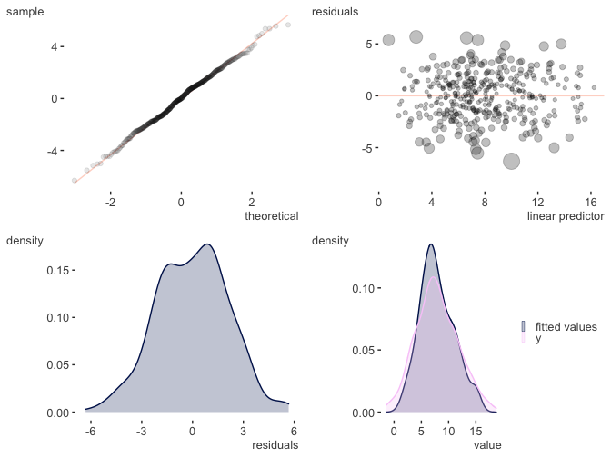

Visibly is a handful of functions I use for color palettes, themes, etc. in R. Inside you will find:
- some ready-made palettes, e.g. based on R blue and Stan red
- a function to quickly and easily create palettes with using
colortools::complementarycolortools::adjacentetc. - clean, web-friendly themes for ggplot2 and plotly
- a function to interact with colorgorical
- coefficient plots for fixed and random effects, plotting of GAM results.
Installation
Install the development version directly from GitHub:
Visibly is currently in its early stages, so more may be added soon. For some additional palettes for those fond of another time, you might be interested in NineteenEightyR.
Examples
Create a palette from a single starting point. This requires the colortools package to create equally spaced colors.
library(visibly)
create_palette('papayawhip')
$papayawhip
[1] "papayawhip"
$complementary
[1] "#FFEFD5" "#D5E5FF"
$analogous
[1] "#FFEFD5" "#FAFFD5" "#FFDAD5"
$split_complentary
[1] "#FFEFD5" "#D5FAFF" "#DAD5FF"
$triadic
[1] "#FFEFD5" "#D5FFEF" "#EFD5FF"
$square
[1] "#FFEFD5" "#D5FFDA" "#D5E5FF" "#FFD5FA"
$tetradic
[1] "#FFEFD5" "#E5FFD5" "#D5E5FF" "#EFD5FF"Plot it to get a feel for things.

$`#ff5500`
[1] "#ff5500"
$complementary
[1] "#FF5500" "#00AAFF"
$analogous
[1] "#FF5500" "#FFD500" "#FF002B"
$split_complentary
[1] "#FF5500" "#00FFD4" "#002BFF"
$triadic
[1] "#FF5500" "#00FF55" "#5500FF"
$square
[1] "#FF5500" "#2AFF00" "#00AAFF" "#D500FF"
$tetradic
[1] "#FF5500" "#AAFF00" "#00AAFF" "#5500FF"One of the built-in palettes is based on R’s blue. Others are based on Stan’s red, plotly’s base colors, and the red-blue palette from RColorBrewer.
A clean theme for plotly.
library(plotly)
mtcars %>%
plot_ly(x=~wt, y=~mpg, color=~cyl) %>%
add_markers(marker=list(size=15)) %>%
theme_plotly()
Visualize a correlation matrix via factor analysis.
Plot some model coefficients. Requires the scico package.

Plot GAM results
library(mgcv)
d = gamSim()
Gu & Wahba 4 term additive model
gam_model = gam(y ~ x0 + s(x1) + s(x2, bs='gp') + s(x3, bs='ps'), data=d)
plot_gam(gam_model, main_var = x2)

See the intro for more.